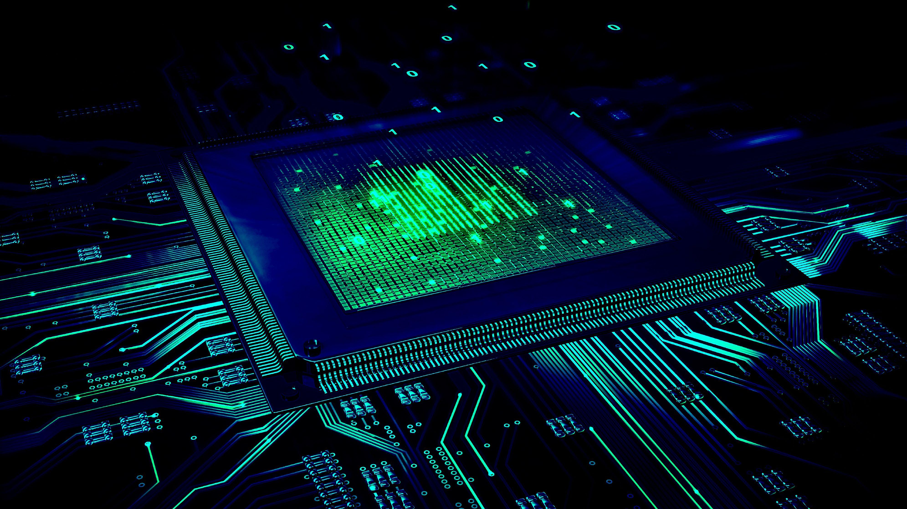
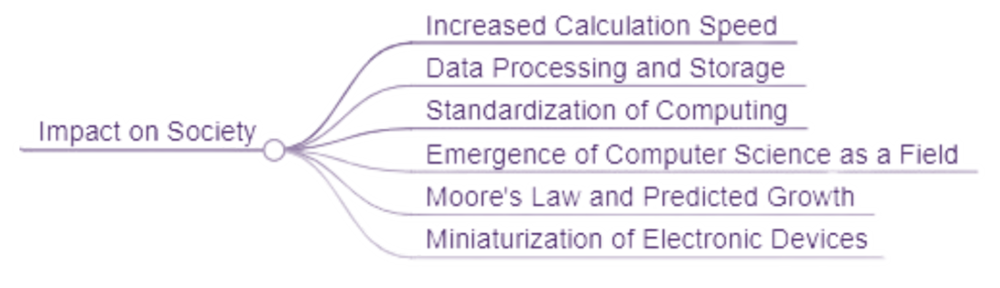
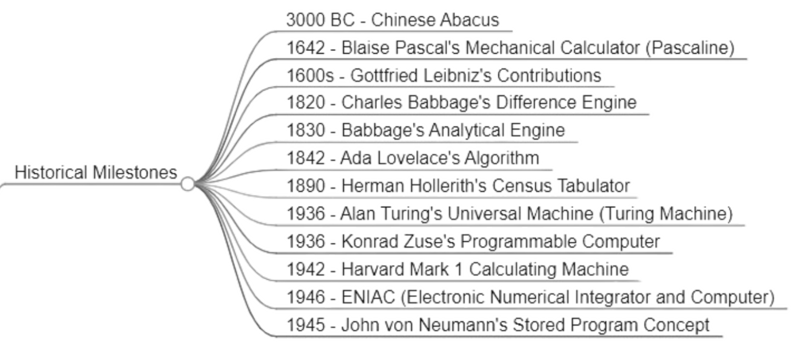

Web Blog
Historical Perspective on Computing
Evolution of computing

the evolution of computing, focusing on the technologies that shaped the modern era. It highlights the collective efforts of many inventors and groups over centuries, starting with the Chinese abacus in 3000 BC and moving through significant milestones such as Blaise Pascal's mechanical calculator, Gottfried Leibniz's contributions to binary arithmetic, and Charles Babbage's mechanical engines. Ada Lovelace is recognized as the first programmer, and the video also touches on the early electromechanical machines like Herman Hollerith's census tabulator, which laid the groundwork for IBM.
highlighting key milestones
🧮 The Chinese abacus from 3000 BC was one of the earliest devices used for counting and calculating, laying the groundwork for future computing technologies.
⚙️ Blaise Pascal's invention of the Pascaline in 1642 marked a significant step towards mechanical computing, introducing the concept of a mechanical calculator.
🤖 Gottfried Leibniz's work in the 1600s, including his calculating machine and foundational concepts in binary arithmetic, laid the groundwork for modern computer communication.
🔢 Charles Babbage, known as the father of the computer, designed the mechanical calculating engines, the difference engine and the analytical engine, which were programmable and could store memory.
👩💻 Ada Lovelace is recognized as the world's first programmer, contributing algorithms and concepts fundamental to programming, such as data analysis and memory addressing.
🏗️ The 1900s saw the convergence of computing technologies, with Alan Turing proposing the Turing machine and Konrad Zuse inventing the world's first programmable computer.
📊 Herman Hollerith's census tabulator, an electromechanical machine, was a precursor to IBM and demonstrated the practical applications of computing in data processing.
💡 John von Neumann's contributions, including the stored-program concept and subroutines, were pivotal in shaping the architecture of modern computers.
📦 The invention of the silicon transistor in 1947 and the subsequent development of the integrated circuit by Jack Kilby revolutionized computer hardware, making devices smaller, faster, and more efficient.
📈 Gordon Moore's observation, known as Moore's Law, predicted the exponential growth in computing power, which has been a driving force in the industry's advancements.
Influential figures
⚪Blaise Pascal is credited with building the first mechanical adding machine, known as the Pascaline, in 1642.
⚪Charles Babbage is considered the father of the computer. His notable designs include the difference engine and the analytical engine, the latter being a programmable mechanical computer.
⚪The first silicon transistor was invented in 1947 by John Bardeen, Walter Brattain, and William Shockley at Bell Labs.
⚪Ada Lovelace is considered the world's first programmer. She worked closely with Babbage and created an algorithm for calculating Bernoulli numbers, outlining many fundamentals of programming.
⚪Herman Hollerith designed one of the first successful electromechanical machines, the census tabulator, which read census data from punched cards. The success of this machine led him to found a firm that eventually became IBM.
⚪Alan Turing's concept of a universal machine, later known as the Turing machine, was significant because it was capable of computing anything that is computable, laying the foundation for the modern computer.
Impact of computing on society

⚪The first successful high-speed electronic digital computer was the ENIAC, completed in 1946. It was composed of nearly 18,000 vacuum tubes and could perform calculations at a much faster rate than its predecessors.
⚪The integrated circuit, invented by Jack Kilby in 1958, allowed for many transistors to be packed onto a single chip, reducing the size, power consumption, and cost of computers, and sparking a hardware revolution.
⚪Moore's Law, attributed to Gordon Moore, one of the founders of Intel, predicts that computing power would double every two years at a low cost, leading to smaller and more affordable computers.
Timeline

⚪The Chinese abacus from 3000 BC was an early machine for counting and calculating.
⚪Blaise Pascal's mechanical calculator, the Pascaline, marked the beginning of mechanized arithmetic in 1642.
⚪Charles Babbage, known as the father of the computer, designed mechanical calculating engines in the 1800s.
⚪Alan Turing proposed the concept of a universal machine, now known as the Turing machine, in 1936.
⚪The ENIAC, completed in 1946, was the first high-speed electronic digital computer.
⚪The invention of the silicon transistor in 1947 led to more compact and efficient computers.
⚪The development of the random-access magnetic core store in 1951 marked the beginning of RAM.
⚪The first transistorized digital computer, TRADIC, was completed in 1954, showcasing the potential of transistors.
⚪IBM introduced the first hard drive in 1957, weighing one ton and storing five megabytes.
⚪The integrated circuit, invented by Jack Kilby in 1958, allowed for packing many transistors onto a single chip.
Introduction to IT
IT Concepts
The concept of Information Technology (IT) as an essential part of modern life, highlighting how technology enables communication and data management. It emphasizes the importance of IT in various sectors and the need for professionals who understand its workings. The paragraph defines IT as the utilization of computer systems, storage, networks, and devices to create, modify, and exchange electronic data. It also explains the concept of data, its forms, and its significance in the technological world.
Hardware vs. Software
Hardware is described as tangible technology, including personal computers, laptops, mobile phones, and tablets, which are used for IT purposes. In contrast, software is intangible and includes websites, programs, systems, and applications. The paragraph further classifies software into systems and applications, providing examples of each and explaining their roles in performing basic computer functions and specialized tasks.
💡Hardware
Hardware refers to the physical components of a computer or IT system, such as personal computers, laptops, mobile phones, and tablets. The script distinguishes hardware from software, highlighting that hardware is tangible and essential for the operation of IT systems.
💡Software
Software is the intangible component of IT systems, including websites, computer programs, systems, and applications. The video script explains that software is divided into systems and applications, with examples provided such as operating systems (iOS, Android) and applications (Slack, Dropbox).
Role of IT
💼 The Value and Application of IT in Business
This paragraph delves into the practical applications of IT, particularly in the business world. It discusses how IT streamlines customer handling, communication, financial record-keeping, and other activities involving electronic data. The script underscores the indispensability of IT in daily business operations and its crucial role in business growth and profitability. It also touches on the value of learning IT skills for job prospects or business ventures.
🎓 Information Technology as a Career Path
This section of the script explores IT as a career path, highlighting its broad scope and the opportunities it presents in a technology-driven world. It cites statistics from the Bureau of Labor Statistics and Glassdoor to emphasize the competitive salaries and job security in IT occupations. The paragraph also lists various fields related to IT, such as IT management, computer systems analysis, web development, cybersecurity, cloud administration, and database administration, and encourages viewers to consider IT as a viable career option.